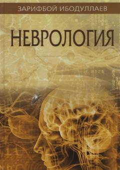

N2Umumiy amaliyot vrachlari uchun zamonaviy nevrologiya qo'llanmasi.
Ushbu qo'llanmada eng ko'p uchraydigan nevrologik sindromlar, kasalliklar, ularning etiologiyasi, klinikasi, tashxis qo'yish va davolash usullari yoritilgan. Kitob umumiy amaliyot vrachlari, terapevtlar va tibbiyot oliy o'quv yurtlari talabalari uchun mo'ljallangan.